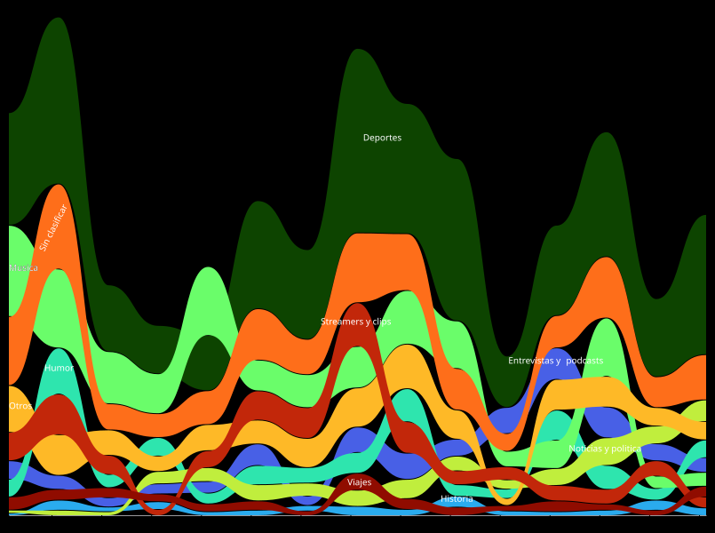

03 · Tableau Public
Top 5 de Canales

Fuente: elaboración propia · 6.273 videos, uno por fila.
Los domingos no miro cosas distintas: miro casi el doble de cosas.
Visualización de datos personales · ECD.2025.C
Breve análisis desde Abril a Agosto de 2026, de mi canal de Youtube, extrayendo los datos de Google Takeout.
01 · RAWGraphs
Agrupé los 6.273 videos en categorías temáticas y ordené las 15 semanas completas del período. El gráfico no muestra cuánto miro de cada cosa, sino en qué puesto quedó cada categoría, semana a semana.

Música arranca segunda y termina séptima. Entrevistas y podcasts hace el camino inverso.
02 · DataWrapper
Este es un zoom dentro de la categoría más grande. Deportes se abre en siete subgrupos.
Fuente: elaboración propia · 15 semanas completas.
03 · Tableau Public
Fuente: elaboración propia · 6.273 videos, uno por fila.
Los domingos no miro cosas distintas: miro casi el doble de cosas.
04 · Flourish
En la siguiente animacion, podemos ver la evolución de los anuncios segun franja horaria, lo que muestra que a la noche hay mayor cantidad de publicidad.
Fuente: elaboración propia.
El 65% de los canales que YouTube me recomendó no volvió a aparecer nunca.
Cómo lo hice
El export de YouTube no incluye la duración de los videos. Todo lo que se mide acá es cantidad de reproducciones, no tiempo. Un registro puede haber sido un Short de ocho segundos o un documental de tres horas.
Quedaron 905 videos sin clasificar (14% del total) y 222 que ya no están disponibles porque fueron borrados o pasaron a privado.
Conclusiones
Escribí acá tus conclusiones.